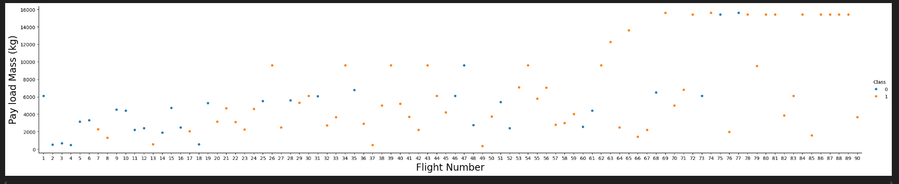
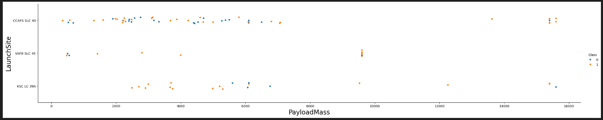
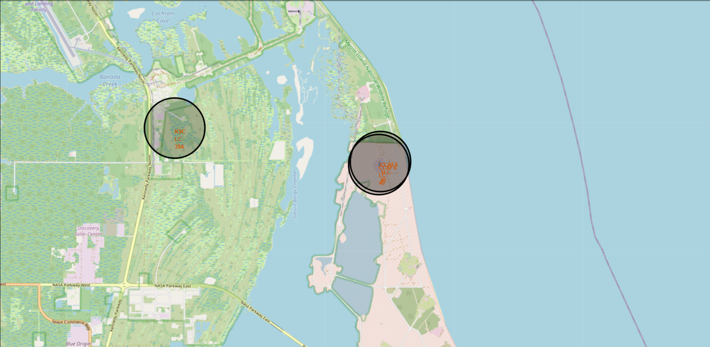
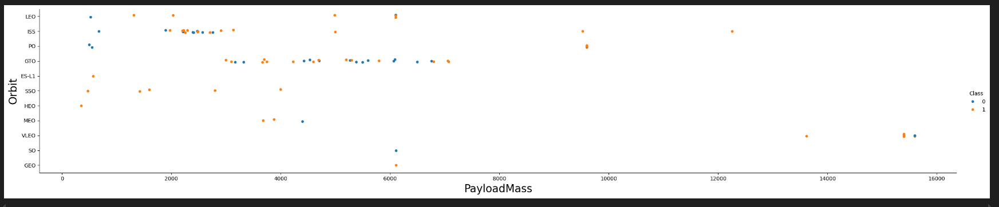

Predicts Falcon 9 first-stage landing success from scraped launch records, with launch-site geospatial analysis.




assume the role of a Data Scientist working for a startup intending to compete with SpaceX, and in the process follow the Data Science methodology involving data collection, data wrangling, exploratory data analysis, data visualization, model development, model evaluation, and reporting my results to stakeholders.
IBM Applied Data Science Capstone Project
This project is part of the IBM Data Science Capstone (Coursera). It focuses on analyzing historical SpaceX launch data to uncover patterns and build a machine learning model to predict mission success.
We collected, cleaned, analyzed, and visualized data using modern Python tools and developed an interactive dashboard to explore launch insights.